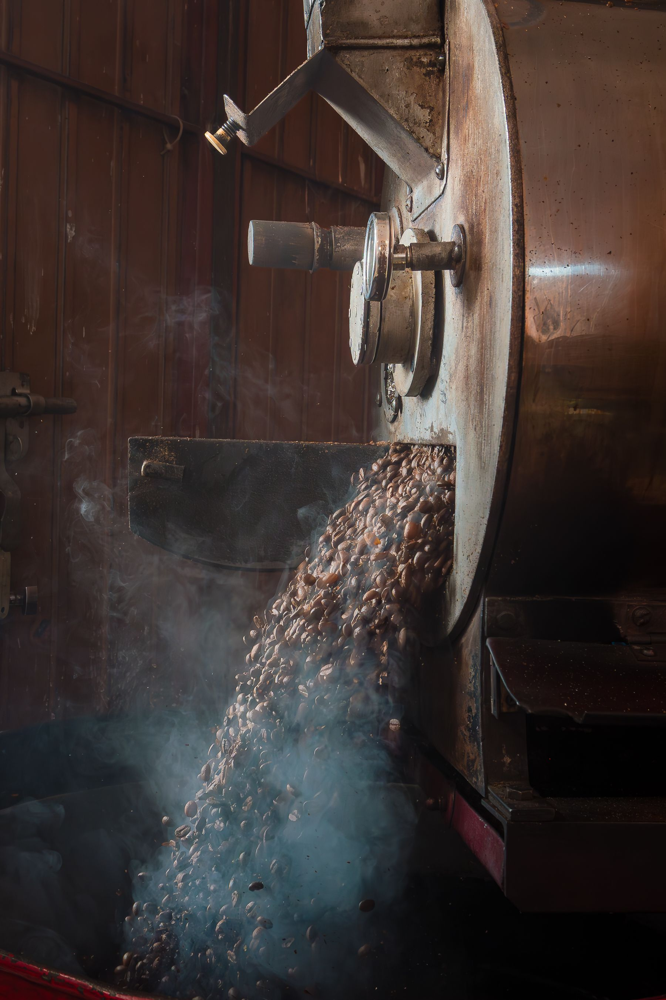

Marée Basse
Torréfaction artisanale sur la Côte d'Opale.

Nos cafés du moment
| Origine | Profil | Prix (250g) |
|---|---|---|
| Éthiopie Guji | Notes florales | 9,50 € |
| Colombie Huila | Équilibre classique | 8,90 € |
| Brésil Cerrado | Rondeur et cacao | 8,50 € |
Horaires
- Mardi – Vendredi
- 9h – 18h
- Samedi
- 9h – 13h
- Dimanche – Lundi
- Fermé
Ce qu'en disent nos clients
Le meilleur café que j'ai bu dans le coin. On sent vraiment la différence avec un café industriel.
— Camille D.
L'équipe prend le temps d'expliquer chaque origine. On repart toujours avec un café qu'on n'aurait pas choisi seul.
— Antoine R.
Questions fréquentes
Combien de temps se conservent les grains ?
Environ 3 à 4 semaines après la torréfaction pour un goût optimal, dans un contenant hermétique à l'abri de la lumière.
Livrez-vous en dehors de la Côte d'Opale ?
Oui, nous livrons partout en France sous 3 à 5 jours ouvrés.
Proposez-vous un abonnement café ?
Oui, un abonnement mensuel ou bimensuel est disponible, avec un café différent à chaque envoi.